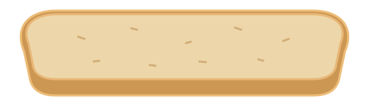
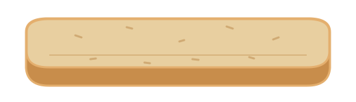

딱 한 걸음 앞서
신입 IC 트레이닝 · 핵심 강의 20장
임재영 AOP
먼저 배우고 싶게, 피드백 전에 관찰
가르치기 전에 신입의 마음과 상태를 먼저 살핀다
배우고 싶은 마음
쇼잉으로 나도 할 수 있다는 기대를 만든다
작은 성공으로 다음 학습 의지를 만든다
관찰 후 피드백
반응 · 두려움 · 학습 속도 · 강점을 본다
이력서와 주변 피드백으로 필드 전에 준비한다
트레이너의 실력과 스탠다드
직접 보여줄 수 있는 실력, 누구에게나 일관된 기본기
직접 보여주는 실력
주 1회 이상 벨-공 세일즈 증명
4시간 안에 세일즈할 수 있는 실전 능력
일관된 기본 패턴
직접 보여주고 실제 과정을 관찰하게 한다
모든 신입에게 같은 기본 스탠다드를 적용한다
첫 3일의 설계
신입이 각 단계에서 이렇게 느끼도록 돕는다
경험
필드가 할 만하다고 느끼게
학습
잘 배우고 성장하면
할 수 있다고 느끼게
판단
스스로 가능성이
있다고 느끼게
DAY 1 · 긍정적인 첫 경험
성과보다 적응과 관찰
반응과 태도
2시간쯤 뛰게 한 뒤 할 만한지 확인하고 기본 자세와 의지를 파악한다.
트레이너의 쇼잉
자신의 세일즈에 집중해 실제 과정을 직접 보여준다.
두려움 제거
프리엠티브를 충분히 제공한다. 재미있고 해볼 만하다고 느끼게 한다.
다음 날의 준비
결과 압박 대신 환경 적응을 돕고 심리적 준비를 만든다.
DAY 2 · 결과로 배우는 날
신입의 실질 역량을 가늠하는 시점
첫 세일즈 1개 이상
반드시 함께 만들어낸다. 신입이 직접 성공을 체감하게 한다.
학습력과 성장성
첫날 대비 개선점을 짚고 학습 능력과 성장 가능성을 본다.
트레이너와 신입의 균형
신입의 세일즈가 우선이며, 트레이너도 함께 성과를 낸다.
DAY 3 · 성과의 패턴 읽기
Stay / Qualifying은 반드시 오너와 상의
0 · 1 · 2
가장 이상적
리더로 육성 가능
3일간 2개
로드트립 제안
3일간 3개
의지와 센스 모두 보유
0 · 0 · 0
빠른 Qualifying 검토
사이트와 시간을 전략적으로 확보해 제로를 막는다. 판단은 반드시 오너와 상의한다.
5 Step 트레이닝
주목 · 짧은 피치 · 해결책 · 클로징 · 거래정보 재확인
Intro
주목
Short Story
짧은 피치
Presentation
해결책
Closing
TAAIS
Rehash
재확인
Closing · TAAIS
구매를 전제로 대화하고, 선택권과 침묵을 활용한다
Trial
항상 시도
Assumptive
구매 전제 대화
Alternative
대안 제시
Indifference
선택권 부여
Silence
침묵 활용
쿠션 멘트: “바쁘시니까”, “이미 좋은 일 많이 하시겠지만”
필드 전·중·후, 트레이너가 챙길 것
준비부터 복기까지 이어지는 하루의 트레이닝
함께 준비
피치와 니즈 점검
개인·섹터 목표 설정
사이트 전략·프리엠티브
물품과 복장 확인
관찰하고 보여주기
유형과 이해도 파악
계속 시도하며 데이터 쌓기
2시간마다 콜백싯 점검
쇼잉·멘탈 케어·좋은 소식
돌아보고 다음을 준비
오늘의 소감·배움 확인
콜백싯으로 넘버 비교
스킬·태도 보완점 피드백
다음 교육 일정 안내
관찰에 맞춘 피드백
사람의 약점에 따라 처방을 달리한다
리액션 강화
표정·제스처 / 즉각 대응
임펄스·바디랭귀지 / 롤플레이
스트릿 스킬
접근 방법 / 첫인상
거절 극복 / 고객 유형별 접근
클로징 강화
TAAIS / Buying sign
침묵·대안 / 클로징 타이밍
목표 상향
높은 목표 / 자기주도 성장
리더십·멘토링 / 커리어 설계
피드백의 다섯 가지 기준
좋은 의도만으로는 충분하지 않다
콜백싯 기준
감정·느낌 대신 넘버 · 스킬 · 태도를 기준으로
상대에게 필요한 말
내가 하고 싶은 말인지 먼저 점검
KISS
간단 · 명료 · 눈높이, 공감할 수 있는 예시
COD 공부
올바른 정보인지 확인, 긴가민가한 말은 하지 않기
타이밍
필수 상황 외에는 2시간에 1번, 그 사이는 개인 목표
피드백 수용이 빠른 신입, 주거테리·유동이 적은 B패턴에는 전략적으로 활용


샌드위치 기법
긍정으로 시작하고, 개선점을 전하고, 다시 긍정으로 마무리
긍정
좋았던 행동을 구체적으로 인정
개선점
바꿔볼 한 가지를 제안
긍정
잘할 수 있다는 믿음으로 마무리
“이것도 저것도 좋았는데, 이 부분만 이렇게 바꿔보면 어떨까요?”
SBI 모델
상황 · 행동 · 영향
상황
이럴 땐
행동
이렇게 하면
영향
이런 장점이 있어요
“이럴 땐 이렇게 하면 이런 장점이 있어요!”
5R 코칭법
디테일한 발전을 위한 대화
Relation
관계형성
Refocus
목표설정
Reality
현실 장애물
Resources
해결자원
Responsibility
책임지기
목표는? 장애물은? 그럼에도 해결할 방법은? 언제까지 무엇을 할지 약속하고 지킨다.
트레이너도 콜백싯을 쓴다
내가 신입을 위해 무엇을 챙겼는가
넘버를 쌓게 했는가
사이트 준비 / 시도하게 하는 피드백
거절 없는 시도 횟수
스킬을 보강했는가
약한 부분 즉시 교육 / 어떤 스킬이든 보강
내일 바로 쓸 수 있게
멘탈을 지켜줬는가
불안·두려움 제거 / 방해되는 마음 케어
필드에 온전히 집중
신입의 콜백싯이 신입을 키우듯, 트레이너의 콜백싯이 트레이너를 키운다
자립을 위한 6주 전략
신입의 성장 속도에 맞춰, 단계별로 모니터링한다
리더힛
2주 이내 달성이 이상적
스케줄과 필드 시간 확보
로드트립
적극 활용하며
성장 과정을 모니터링
필드 적응
Self 시점 사전 안내
심리적 준비와 실전 역량
6주는 원본의 트레이닝 운영 기준이며, 개인별 적응 속도를 고려한다
트레이너의 세 가지 핵심 역할
신입이 자발적으로 성장할 수 있는 환경
내가 직접 해냈다
두려워하면 돕고, 아니면 혼자 하게
두려움의 수준을 먼저 파악한다
안전하게 도전한다
초기에 충분한 서포트
점진적으로 독립성을 부여한다
스스로 깨닫게 한다
인정받을 때 주도적이 된다
혼냄보다 인정과 칭찬
생계·수입, 안전, 소속감, 존중을 살피며 스스로 더 큰 목표에 도전하도록 돕는다.
Stay / Qualifying, 함께 책임지는 판단
트레이너 50%, 신입 50%. 반드시 오너와 상의한다
STAY
결과가 좋거나
기준 도달에 확신이 있을 때
QUALIFYING
최소 기준 도달이 어렵고
확신이 없을 때
개별 상황을 고려한다. 캔슬은 지점에서 관리하고 IC는 그로스에 집중하도록 돕는다.
딱 한 걸음 앞서
기다릴 줄 아는 리더
먼저 배우고 싶게 만들고, 피드백 전에 관찰한다
신입이 스스로 할 수 있다고 느끼도록
PRESENCE · 임재영 AOP
Presence Team